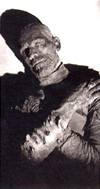

| |

News
Eternal life?
Images of mummies
A study day on the enduring appeal of the mummy

© BFI stills, posters and designs |
|
Call for Papers
Chinese Arts in the International Arena
18th - 20th April 2002

More information
Chinese contemporary arts are fast becoming a formidable economic and cultural force, with
widespread critical acclaim in the field of film, literature and the visual arts. The two-day conference will explore the
historical and cultural framework of the current debate, considering the impact of economic and political forces, collecting
and connoisseurship, migration and issues of identity, which have shaped and transformed both discourse and practice.
The conference will bring together artists, writers, curators, arts organisations, museums and academic
institutions from different disciplines and international locations, providing a platform for critical analysis and debate
amongst delegates, speakers and panellists.
The conference will be organised thematically, based on the four main areas detailed below:
- Cultural frameworks: Chinese modernism, aesthetics and cultural hierarchies
Contemporary Chinese art defies simple definition, but is rather characterised by plurality, diversity and at times
contradiction. The artist occupies a pivotal position between past and present, local and global, modern and traditional
means of expression. Western art and aesthetics are juxtaposed with traditional Chinese mores; modern and postmodern with
traditional art-forms. Participants are invited to explore these complex relationships, and question the relevance of
traditional discourse in the global marketplace of contemporary society.
- The markets: collecting, distribution and infrastructure
Commercial markets have traditionally played an important role in shaping and defining the arts of China. Participants might
consider the role of collectors, dealers and distributors in mainland China today, and the extent to which regional variation,
such as the North/South Yangtze divide, has contributed to emerging market trends. The impact of art education might also be
considered, in the light of the recent establishment of new fine art, design and architecture courses at major Chinese Universities.
Networks of communication between artists, collectors, curators and audiences at a local, national and global level have also helped
define commercial markets. Participants may wish to examine the markets of Europe, America, South East Asia and Australia to establish
the place of Chinese arts in the global art market.M
- Traditional art forms and the roles of the curator, government and the artist
Museum and gallery collections in the East and West are dominated by traditional Chinese art. These collections tend to reinforce the
notion of China as a homogenous totality, a belief supported by successive ruling elites to endorse the prevailing hegemony. Speakers might
consider the role of the curator in contextualising and interpreting these collections, and the impact of government on the evolution of art
in China, both in the recent past and in the present. Artists respond to their cultural heritage in different ways, at times incorporating
elements of traditional Chinese arts alongside those of the modern era. Speakers may wish to examine current trends and how museum and gallery
curators have responded to recent developments.
- The Chinese diaspora and Mainland China
Artists working in mainland China and in diaspora communities overseas may share a similar cultural heritage, but the work they produce is as
diverse as their geographical location. Artists may work in isolation, or in connection with networks of communication which operate at
regional, national or international levels, which in turn influence the work they produce. Consider how issues of identity have shaped the
art of contemporary artists, and how far the work of overseas Chinese artists has been informed by Chinese culture, or that of their country of
domicile. As national and cultural boundaries are increasingly redefined, is it possible to identify new identities or speak of a 'global' art?
Speakers may wish to focus on the experience of overseas artists working in the UK, Europe, America, Australia or South East Asia.
|
|


Bronze figure of the Buddha Amitabha, from Silla, Korea 7th - 8th century AD |